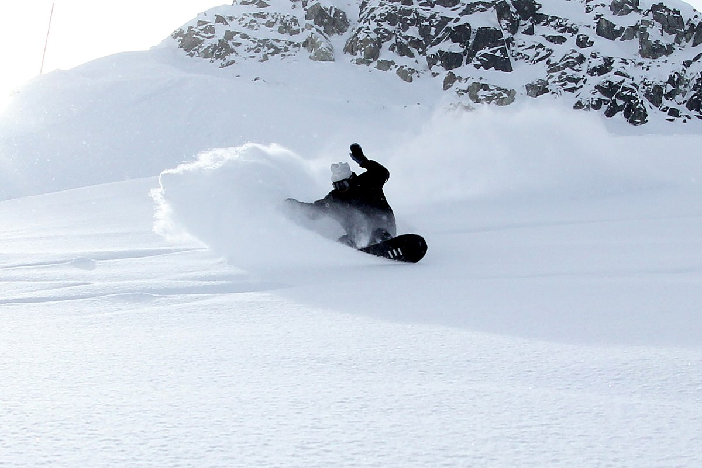

Info on Snow Boarding
Snowboarding is a recreational and competitive activity that involves descending a snow-covered slope while standing on a snowboard that is almost always attached to a rider's feet. It features in the Winter Olympic Games and Winter Paralympic Games.

The development of snowboarding was inspired by skateboarding, sledding, surfing, and skiing. It was developed in the United States in the 1960s, became a Winter Olympic Sport at Nagano in 1998 and featured in the Winter Paralympics at Sochi in 2014. As of 2015, its popularity (as measured by equipment sales) in the United States peaked in 2007 and has been in a decline since.
History of Snow Boarding
Modern snowboarding began in 1965 when Sherman Poppen, an engineer in Muskegon, Michigan, invented a toy for his daughters by fastening two skis together and attaching a rope to one end so he would have some control as they stood on the board and glided downhill. Dubbed the "snurfer" (combining snow and surfer) by his wife Nancy, the toy proved so popular among his daughters' friends that Poppen licensed the idea to a manufacturer, Brunswick Corporation, that sold about a million snurfers over the next decade.[5] And, in 1966 alone, over half a million snurfers were sold.
In February 1968, Poppen organized the first snurfing competition at a Michigan ski resort that attracted enthusiasts from all over the country. One of those early pioneers was Tom Sims, a devotee of skateboarding (a sport born in the 1950s when kids attached roller skate wheels to small boards that they steered by shifting their weight). In the 1960s, as an eighth grader in Haddonfield, New Jersey, Sims crafted a snowboard in his school shop class by gluing carpet to the top of a piece of wood and attaching aluminum sheeting to the bottom. He produced commercial snowboards in the mid-70s.
The pioneers were not all from the United States; in 1976, Welsh skateboard enthusiasts Jon Roberts and Pete Matthews developed their own snowboards to use at their local dry ski slope.
Also during this same period, in 1977, Jake Burton Carpenter, a Vermont native who had enjoyed snurfing since the age of 14, impressed the crowd at a Michigan snurfing competition with bindings he had designed to secure his feet to the board. That same year, he founded Burton Snowboards in Londonderry, Vermont. The "snowboards" were made of wooden planks that were flexible and had water ski foot traps. Very few people picked up snowboarding because the price of the board was considered too high at $38 and were not allowed on many ski hills, but eventually Burton would become the biggest snowboarding company in the business. Burton's early designs for boards with bindings became the dominant features in snowboarding.
The first competitions to offer prize money were the National Snurfing Championship, held at Muskegon State Park in Muskegon, Michigan. In 1979, Jake Burton Carpenter came from Vermont to compete with a snowboard of his own design. There were protests about Jake entering with a non-snurfer board. Paul Graves, and others, advocated that Jake be allowed to race. A "modified" "Open" division was created and won by Jake as the sole entrant. That race was considered the first competition for snowboards and is the start of what became competitive snowboarding. Ken Kampenga, John Asmussen and Jim Trim placed 1st, 2nd and 3rd respectively in the Standard competition with best two combined times of 24.71, 25.02 and 25.41; and Jake Carpenter won prize money as the sole entrant in the "open" division with a time of 26.35. In 1980 the event moved to Pando Winter Sports Park near Grand Rapids, Michigan because of a lack of snow that year at the original venue.
In the early 1980s, Aleksey Ostatnigrosh and Alexei Melnikov, two Snurfers from the Soviet Union, patented design changes to the Snurfer to allow jumping by attaching a bungee cord, a single footed binding to the Snurfer tail, and a two-foot binding design for improved control.
As snowboarding became more popular in the 1970s and 1980s, pioneers such as Dimitrije Milovich (founder of Winterstick out of Salt Lake City, UT), Jake Burton Carpenter (founder of Burton Snowboards from Londonderry, Vermont), Tom Sims (founder of Sims Snowboards), David Kemper (founder of Kemper Snowboards) and Mike Olson (founder of Gnu Snowboards) came up with new designs for boards and mechanisms that slowly developed into the snowboards and other related equipment. From these developments, modern snowboarding equipment usually consists of a snowboard with specialized bindings and boots.
In April 1981, the "King of the Mountain" Snowboard competition was held at Ski Cooper ski area in Colorado. Tom Sims along with an assortment of other snowboarders of the time were present. One entrant showed up on a homemade snowboard with a formica bottom that turned out to not slide so well on the snow.
In 1982, the first USA National Snowboard race was held near WoodStock, Vermont , at Suicide Six. The race, organized by Graves, was won by Burton's first team rider Doug Bouton.
In 1983, the first World Championship halfpipe competition was held at Soda Springs, California. Tom Sims, founder of Sims Snowboards, organized the event with the help of Mike Chantry, a snowboard instructor at Soda Springs.
In 1985, the first World Cup was held in Zürs, Austria, further cementing snowboarding's recognition as an official international competitive sport.
In 1990, the International Snowboard Federation (ISF) was founded to provide universal contest regulations. In addition, the United States of America Snowboard Association (USASA) provides instructing guidelines and runs snowboard competitions in the U.S. today, high-profile snowboarding events like the Winter X Games, Air & Style, US Open, Olympic Games and other events are broadcast worldwide. Many alpine resorts have terrain parks.
At the 1998 Winter Olympic Games in Nagano, Japan, Snowboarding became an official Olympic event. France's Karine Ruby was the first ever to win an Olympic gold medal for Woman's Snowboarding at the 1998 Olympics, while Canadian Ross Rebagliati was the first ever to win an Olympic gold medal for Men's Snowboarding.
Initially, ski areas adopted the sport at a much slower pace than the winter sports public. Indeed, for many years, there was animosity between skiers and snowboarders, which led to an ongoing skier vs snowboarder feud. Early snowboards were banned from the slopes by park officials. For several years snowboarders would have to take a small skills assessment prior to being allowed to ride the chairlifts. It was thought that an unskilled snowboarder would wipe the snow off the mountain. In 1985, only seven percent of U.S. ski areas allowed snowboarding, with a similar proportion in Europe. As equipment and skills improved, gradually snowboarding became more accepted. In 1990, most major ski areas had separate slopes for snowboarders. Now, approximately 97% of all ski areas in North America and Europe allow snowboarding, and more than half have jumps, rails and half pipes.
In 2004, snowboarding had 6.6 million active participants. An industry spokesman said that "twelve year-olds are out-riding adults." The same article said that most snowboarders are 18–24 years old and that women constitute 25% of participants.
here were 8.2 million snowboarders in the US and Canada for the 2009–2010 season. There was a 10% increase over the previous season, accounting for more than 30% of all snow sports participants.
On 2 May 2012, the International Paralympic Committee announced that adaptive snowboarding (dubbed "para-snowboarding") would debut as a men's and women's medal event in the 2014 Paralympic Winter Games taking place in Sochi, Russia.
Styles
Since snowboarding's inception as an established winter sport, it has developed various styles, each with its own specialized equipment and technique. The most common styles today are: freeride, freestyle, and freecarve/race. These styles are used for both recreational and professional snowboarding. While each style is unique, there is overlap between them.
Jibbing
"Jibbing" is the term for technical riding on non-standard surfaces, which usually includes performing tricks. The word "jib" is both a noun and a verb, depending on the usage of the word. As a noun: a jib includes metal rails, boxes, benches, concrete ledges, walls, vehicles, rocks and logs. As a verb: to jib is referring to the action of jumping, sliding or riding on top of objects other than snow. It is directly influenced by grinding a skateboard. Jibbing is a freestyle snowboarding technique of riding. Typically jibbing occurs in a snowboard resort park but can also be done in urban environments.
Freeriding
Freeriding is a style without a set of governing rules or set course, typically on natural, un-groomed terrain. The basic allows for various snowboarding styles in a fluid motion and spontaneity through naturally rugged terrain. It can be similar to freestyle with the exception that no man-made features are utilized.
Freestyle
Freestyle snowboarding is any riding that includes performing tricks. In freestyle, the rider utilizes natural and man-made features such as rails, jumps, boxes, and innumerable others to perform tricks. It is a popular all-inclusive concept that distinguishes the creative aspects of snowboarding, in contrast to a style like alpine snowboarding.